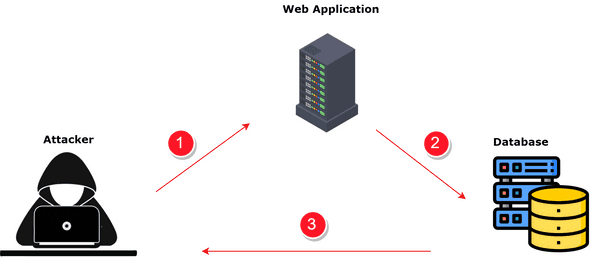

Inyección SQL: Explotando Vulnerabilidades en Bases de Datos
La Inyección SQL es una de las amenazas cibernéticas más antiguas y persistentes que enfrentan los sistemas basados en bases de datos. Esta técnica de ataque se aprovecha de vulnerabilidades en aplicaciones web que interactúan con bases de datos, permitiendo a los atacantes ejecutar comandos SQL maliciosos de forma no autorizada. A través de esta explotación, los ciberdelincuentes pueden acceder, modificar o eliminar datos almacenados en la base de datos, lo que puede llevar a la pérdida de información confidencial o incluso al compromiso total del sistema.

¿Cómo Funciona la Inyección SQL?
La Inyección SQL se lleva a cabo cuando un atacante ingresa datos maliciosos en campos de entrada de una aplicación web que interactúa con una base de datos. Estos campos suelen ser parte de formularios de búsqueda, inicio de sesión o cualquier otra interfaz de usuario que recopile información y la procese en la base de datos. Si la aplicación no está debidamente protegida, los comandos SQL maliciosos pueden ser ejecutados como parte de la consulta, permitiendo al atacante realizar acciones no autorizadas en la base de datos.
Consecuencias de la Inyección SQL
Las consecuencias de un ataque de Inyección SQL pueden ser devastadoras. Los atacantes pueden acceder a información confidencial, como datos de usuarios, contraseñas, números de tarjetas de crédito y otros registros sensibles. Además, pueden modificar o eliminar datos de la base de datos, lo que puede llevar a la corrupción de datos o al mal funcionamiento de la aplicación.
¿Cómo protegerse de Inyección SQL?
- Validación y saneamiento de datos: Todas las entradas de usuario deben ser validadas y "saneadas" antes de ser utilizadas en consultas SQL. Esto implica asegurarse de que los datos ingresados por el usuario no contengan comandos SQL maliciosos.
- Utilizar consultas parametrizadas: En lugar de concatenar valores directamente en las consultas SQL, se deben utilizar consultas parametrizadas, que son más seguras y evitan la Inyección SQL.
- Actualizar y parchear software: Mantener el software y los sistemas actualizados con los últimos parches de seguridad es esencial para cerrar las posibles brechas de seguridad que podrían ser explotadas.
- Auditoría y monitorización: Implementar un sistema de auditoría y monitorización puede ayudar a detectar y responder rápidamente a intentos de Inyección SQL y otros ataques.